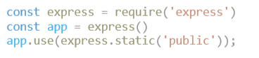

A callback is a function passed into another function as an argument for later execution.
Clean code and following code conventions is a key to readability. The key is to be consistent throughout the
project.
Sources for code conventions and popular guidelines:
MDN JavaScrip
General Guidelines
AirBnB JavaScript Style Guide
The package.json file fullfills three responsibilities. It has the functional attributes of a project that npm uses to install dependencies, run scripts, and identify the entry point to our package. It also records metadata about a project which is required before publishing to NPM.
To import code defined in another file also called modules it needs to be imported with the keyword 'require' The result of require is then stored in a variable which is used to invoke the functions using the dot notation.
To handle HTTP POST requests in Express.js you used to need to install the module called body-parser. Which extracts the entire body portion of an incoming request stream and exposes it on req.body. This body-parser module parses the JSON data submitted using HTTP POST request. After Express 4.16, to parse JSON bodies we can just use:
JavaScript Hoisting refers to the process whereby the interpreter appears to move the declaration of
functions,
variables or classes to the top of their scope, prior to execution of the code. Hoisting allows
functions to be
safely used in code before they are declared.
Source: MDN
Web Docs